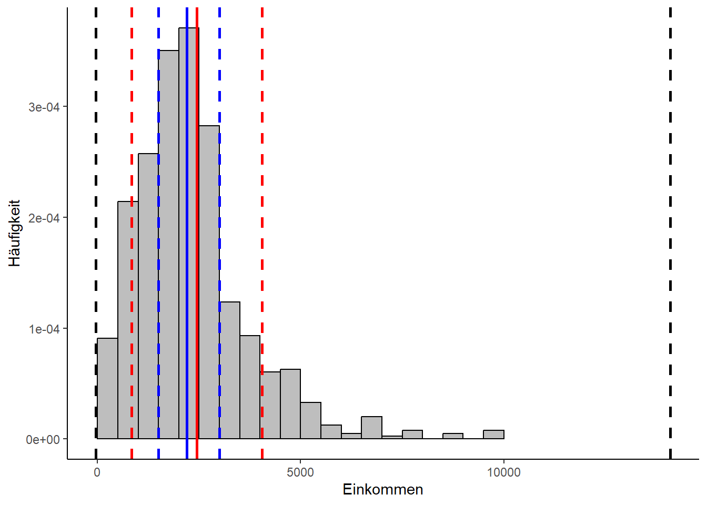

Streuungsmaße: Spannweite, Quartilsabstand, Standartabweichung, Varianz

Im letzten Abschnitt haben wir uns angesehen, mit welchen Maßen sich etwas darüber sagen lässt, um welche Punkte sich die Masse der Messwerte in unserem Datensatz konzentriert. Jetzt wollen wir wissen, wie stark die Messwerte streuen, also wie stark die Messwerte vom Lageparameter abweichen.
1 Data Management
Dazu installieren und laden wir zunächst die nötigen Pakete mit Hilfe von Pacman und dem p_load-Befehl:
Im Anschluss laden wir die benötigten Daten und bereiten diese für die spätere Analyse vor.
2 Die Spannweite
Die Spannweite (auch Range genannt) gibt den Abstand zwischen der kleinsten und der größten Merkmalsausprägung an. Sie ist das einfachste Streuungsmaß, zugleich aber nur wenig aussagekräftig.
\[
SP = x_{max} - x_{min}
\] Mit der range-Funktion kann man sich in R die beiden Extremwerte als Vektor ausgeben lassen:
Alternativ kann man auch einfach Das Maximum und das Minimum ermitteln und die Differenz berechnen:
3 Quantilsabstände
Dieses Maß gibt die Differenz zweier Quantile an. Insbesondere der Quartilsabstand (75%-Quantil - 25%-Quantil) ist hier von Bedeutung.
Der Quaantilsabstand berechnet sich für das obere Quantil \(Q_{o}\) und das untere Quantil \(Q_{u}\) folgendermaßen:
\[ QA = Q_{o} - Q_{u} \]
Für den Quartilsabstand gibt es eine Funktion in R:
# Berechnung mit der vorgefertigten R-Funktion IQR (Interquartile Range):
IQR(allbus_df$VertrauenBR)[1] 2- Berechnung mit der vorgefertigten R-Funktion IQR (Interquartile Range)
Um den mittleren Quartilsabstand zu ermitteln, kann man das Ergebnis noch durch 2 teilen.
4 Varianz und Standardabweichung
Ein nützlicheres Maß dafür, wie die einzelnen Merkmalsausprägungen um den Mittelwert verteilt sind - vorausgesetzt, man hat es mit kardinal skalierten Daten zu tun, kann die Varianz sein.
Es wird unterschieden zwischen der Varianz der Grundgesamtheit und der Stichprobenvarianz. Bei ersterer berechnet man für jede einzelne Merkmalsausprägung ihre Abweichung vom Mittelwert, quadriert die Ergebnisse und summiert diese. Anschließend teilt man durch die Größe der Grundgesamtheit:
\[ Var = \frac{1}{n}\sum_{i=1}^{n}(x_i - \bar{x})^2 \]
Da man wie gesagt meist nur auf eine Stichprobe zurückgreifen kann, kann man den Mittelwert der Grundgesamtheit durch den Mittelwert der Stichprobe nur schätzen. Um die damit verbundene Verzerrung auszugleichen, kann es sinnvoll sein die Summe der quadrierten Abweichungen nicht durch \(n\), sondern durch \((n-1)\) zu teilen. So ergibt sich folgende Formel, wobei \(n\) hier die Stichprobengröße darstellt:
\[ Var = \frac{1}{n-1}\sum_{i=1}^{n}(x_i - \bar{x})^2 \]
In R bekommen wir die Varianz mit der var-Funktion, hier am Beispiel des Netto-Einkommens:
Wie wir sehen, ist das Ergebnis sehr groß und auf den ersten Blick nicht leicht interpretierbar. Nützlicher ist da die Standardabweichung, die wir einfach dadurch erhalten, dass wir die Quadratwurzel der Varianz ziehen:
\[
SD = \sqrt{Var} = s = \sqrt{\frac{1}{n-1}\sum_{i=1}^{n}(x_i - \bar{x})^2}
\] R bietet zur Berechnung der Standardabweichung die sd-Funktion an.
5 Zusammenfassungen ausgeben lassen
Wenn man nicht jeden Parameter einzeln abfragen will und kardinal skalierte Daten hat, kann man sich die wichtigsten Lageparameter auch als Zusammenfassung ausgeben lassen:
6 Visualisierung der Streuungsparameter
In folgendem Codebeispiel lassen wir uns das Histogramm aus dem letzten Abschnitt ausgeben, allerdings reduziert auf Median (blau, durchgezogene Linie) und das arithmetische Mittel (rot, durchgezogene Linie). Wir ergänzen diese Lageparameter um den Minimal- und den Maximalwert (schwarz, gestrichelt), das untere und obere Quartil (blau, gestrichelt) und die Standardabweichung, hier beiderseits vom Mittelwert aufgetragen(rot, gestrichelt).

Es ist sehr deutlich zu erkennen, dass die Spannweite (die Distanz zwischen den beiden schwarzen gestrichelten Linien) wenig hilfreich ist, wenn man erfahren will, wo besonders viele Messwerte liegen. Der Interquartilsabstand scheint hier sehr viel aussagekräftiger zu sein, während die Standardabweichung unterhalb des Mittelwerts mehr Messwerte einzuschließen scheint als oberhalb davon. Dieses Ungleichgewicht wird im Abschnitt über Verteilungen noch eine Rolle spielen.